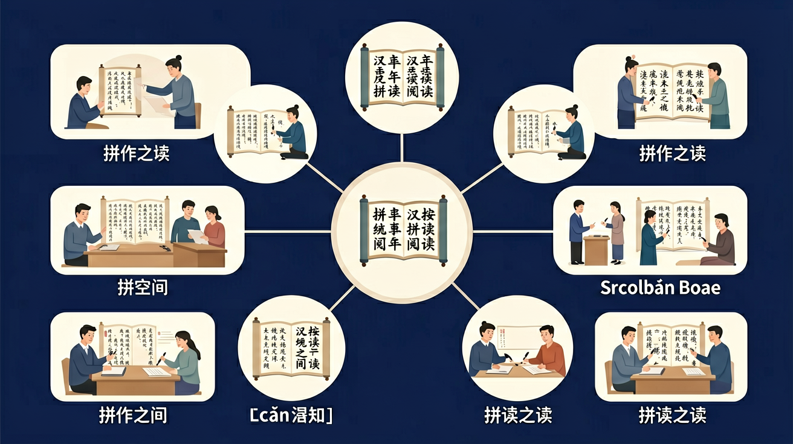

🌍 And（已知）：我们已经认识了一些汉字
⚡ But（问题）：但不认识的字该怎么读？
💡 Therefore（新知）：因此我们学习拼音，它是汉字注音的工具，帮助我们准确发音
一年级语文 · 拼音阅读
看拼音认字，读故事，做游戏！

回忆：今天学了哪些关键词和规则？试着说出来。
用自己的话解释今天学的核心概念，不看书能说清楚吗？
用今天的知识解决一个实际问题，或写一个新例子。
把今天的知识与已有知识联系起来：有什么共同点？有什么区别？能不能自己创造一道新题？
先独立作答，再点选项查看对错与错因。
下列哪个拼音的声调标注正确？
超市里哪种水果的拼音有误？
下列哪个音节需要ü保留两点？
把'去超市'的拼音补充完整：q____ chāo shì
答案：ù
去字的拼音是qù，注意ü在jqx后省略两点
根据拼音写汉字：mā ma ____（买）píng guǒ
答案：买
mǎi对应汉字'买'
关于拼音规则哪个说法正确？
观察超市商品标签，记录5个带ü的音节
❓ 为什么拼音里ü见到jqx要摘帽子？
❓ iu和ui读音这么像怎么区分？
❓ 整体认读音节为什么不用拼？
学完这一课，这些问题你都能自信地回答。
把音节拆成声母+韵母，像拆积木
ü摘帽是因jqx自带ü音，避免重复
iu尾音上扬像爬坡，ui尾音下滑像滑梯
用颜色标记声调变化更直观
用拼音给玩具贴标签
✅ 整体认读像打包盒，直接读整包
💡 受常规拼读习惯干扰
✅ 按a-o-e-i-u-ü顺序找帽子主人
💡 未掌握标调优先级规则
口诀：jqx小淘气，见到ü眼就眯
类比：拼音像搭乐高，声母韵母组合变新音
And：学生已经会说很多中文词语
But：不知道这些声音怎么变成书本上的符号
Therefore：帮声音穿上文字小马甲
拼音就像声音的密码本，我们用26个字母给汉字注音。比如'妈妈'的拼音是'mā ma'，声调像小帽子——第一声是平帽子（ˉ），数字标作1。记住：一个汉字对应一个拼音方块，'熊猫'要写成'xióng māo'两个方块哦！
🌍 小朋友玩奥特曼卡片时念'ào tè màn'，其实卡片背面就印着'Ào Tè Màn'的拼音。下次吃'pī sà'时看看外卖盒，找找披萨的拼音吧！
下面哪个是'苹果'的正确拼音？
And：能认出单个拼音字母
But：不知道字母怎么组合成字音
Therefore：学拼装声音的乐高积木
拼音分声母（开头音）和韵母（后续音），像'小火车头+车厢'。比如'猫(māo)'：声母'm'像火车头，韵母'ao'是车厢，声调'ˉ'是轨道。特别注意'ü'见到j/q/x要摘眼镜（去掉两点），'橘子'写作'jú zi'而不是'jǘ zi'。
🌍 玩'声母韵母对对碰'游戏：老师说'b-à'，你要快速拍'爸'字卡片；下雨天'w-ū'就变成乌云玩偶的暗号啦！
'兔子'的拼音中韵母是什么？
And：能读准单字声调
But：词语中声调会跳舞变形
Therefore：抓住调皮的变调小精灵
四个声调像过山车：一声平（ˉ），二声扬（ˊ），三声拐弯（ˇ），四声降（ˋ）。但两个三声相遇时，第一个会变成二声！比如'老虎'读作'láo hǔ'（标调仍写lǎo hǔ）。数字例子：'333'读'sān sān sān'，但'3点'读'sán diǎn'。
🌍 观察妈妈喊你全名时声调变化：'李小míng（二声）'生气时会变成'李xiǎo（半三声）míng（拉长四声）'！
'你好'的正确读法是？
And：会拼普通音节
But：遇到特殊音节总拼错
Therefore：破解不用拼的魔法音节
有些拼音像被施了魔法，必须整体认读不能拆分！16个整体认读音节就像速冻水饺，直接吃不用煮。比如'月亮'的'yue'要整个读（约），拆成'y-ü-e'就错了；'10元'读'shi yuan'，不是'sh-i y-u-an'。记住'zhi/chi/shi/ri/zi/ci/si/yi/wu/yu/ye/yue/yuan/yin/yun/ying'这16个！
🌍 买'椰子汁'时要念'ye zi zhi'三个整体认读，和妈妈玩'听到魔法音节就跺脚'的游戏吧！
哪个词不含整体认读音节？